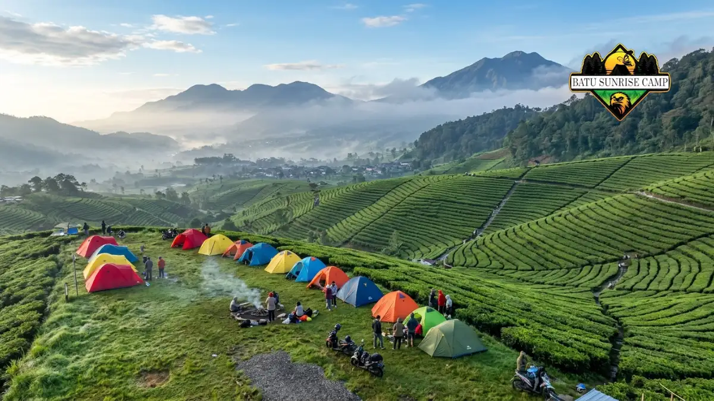

Tempat camping di Solo umumnya berada di kawasan Karanganyar seperti Tawangmangu, Kemuning, dan lereng Gunung Lawu, dengan jarak tempuh sekitar 30-60 menit dari pusat kota Solo dan suhu udara yang sejuk sepanjang tahun.
Apa Saja Kawasan Utama Tempat Camping di Solo?
Kawasan utama tempat camping di Solo terpusat di jalur Tawangmangu dan lereng Gunung Lawu, karena wilayah ini memiliki kontur pegunungan, udara sejuk, dan akses jalan yang relatif mudah dari kota Solo.
Secara umum, kawasan tersebut dapat dibagi menjadi tiga kelompok:
- Kawasan Tawangmangu dan sekitar air terjun Grojogan Sewu, yang populer untuk camping keluarga.
- Kawasan Kemuning dan perkebunan teh Kemuning, yang dikenal dengan pemandangan hamparan kebun teh.
- Kawasan lereng Gunung Lawu melalui basecamp Cemoro Sewu dan Cemoro Kandang, yang lebih ditujukan untuk pendaki dan camper berpengalaman.
Ketiga kawasan ini berada dalam wilayah administratif Kabupaten Karanganyar, yang secara geografis berbatasan langsung dengan Kota Solo, sehingga sering disebut sebagai bagian dari kawasan wisata Solo Raya.
Bumi Perkemahan Sekipan Tawangmangu
Bumi Perkemahan Sekipan berada di kawasan hutan pinus Tawangmangu dan menjadi salah satu lokasi camping paling dikenal di sekitar Solo karena suasana hutan yang rindang dan udara sejuk.
Lokasi ini umumnya dipilih karena beberapa alasan:
- Berada di ketinggian sekitar 1.200 mdpl dengan suhu udara sejuk sepanjang tahun.
- Tersedia lahan datar yang cukup luas untuk mendirikan banyak tenda sekaligus.
- Akses jalan sudah beraspal dan bisa dilalui kendaraan roda empat hingga area parkir.
- Cocok untuk camping keluarga maupun kegiatan komunitas dalam jumlah besar.
Karena letaknya di dalam kawasan hutan pinus, pengunjung disarankan membawa penerangan tambahan dan perlengkapan hangat, sebab suhu malam hari dapat turun cukup signifikan dibanding daerah dataran rendah.
Camping Ground Kemuning Karanganyar

Pemandangan kebun teh Kemuning Karanganyar sebagai camping ground favorit di sekitar Solo.
Camping ground di kawasan Kemuning menawarkan pemandangan hamparan kebun teh yang luas dan menjadi favorit untuk camping bertema pemandangan alam serta foto lanskap.
Karakteristik utama kawasan ini meliputi:
- Pemandangan kebun teh yang terbuka sehingga cocok untuk menikmati matahari terbit.
- Beberapa titik lokasi menyediakan lahan camping semi permanen dengan fasilitas dasar.
- Jarak tempuh dari pusat Kota Solo umumnya sekitar 40-60 menit perjalanan darat.
- Suhu udara sejuk khas dataran tinggi, terutama pada dini hari.
Kawasan Kemuning juga sering dijadikan titik transit sebelum melanjutkan perjalanan ke arah Cemoro Sewu maupun kawasan wisata Candi Cetho, sehingga banyak camper menggabungkan agenda camping dengan kunjungan wisata sejarah.
Apakah Gunung Lawu Bisa Dijadikan Tempat Camping di Solo?
Ya, jalur pendakian Gunung Lawu melalui basecamp Cemoro Sewu dan Cemoro Kandang dapat dijadikan tempat camping, namun umumnya ditujukan untuk pendaki yang sudah memiliki pengalaman dan perlengkapan gunung yang memadai.
Beberapa hal penting terkait camping di jalur Gunung Lawu:
- Terdapat beberapa pos pendakian yang biasa digunakan sebagai titik mendirikan tenda.
- Ketinggian puncak Gunung Lawu mencapai sekitar 3.265 mdpl, sehingga suhu di jalur atas bisa mendekati titik beku pada dini hari.
- Diperlukan perlengkapan gunung standar seperti sleeping bag tebal, jaket tahan angin, dan alas tidur.
- Pendakian sebaiknya dilakukan dalam kelompok dan melapor ke basecamp resmi sebelum naik.
Bagi pemula yang belum terbiasa mendaki gunung, disarankan memilih camping ground berfasilitas seperti Sekipan atau Kemuning terlebih dahulu sebelum mencoba jalur pendakian Gunung Lawu.
Bagaimana Kondisi Cuaca di Tempat Camping Sekitar Solo?
Kondisi cuaca di sebagian besar tempat camping sekitar Solo bersifat sejuk hingga dingin karena berada di kawasan dataran tinggi, dengan suhu malam yang dapat turun jauh lebih rendah dibanding suhu di pusat Kota Solo.
Secara umum pola cuacanya sebagai berikut:
- Musim kemarau (sekitar April-Oktober) cenderung lebih kering dan cocok untuk camping.
- Musim hujan membuat jalur tanah menjadi licin, terutama di kawasan hutan dan lereng gunung.
- Suhu dini hari di kawasan Tawangmangu dan Kemuning umumnya terasa lebih dingin dibanding siang hari.
- Kabut sering muncul pada pagi hari di kawasan dataran tinggi.
Karena karakteristik cuaca ini dapat bervariasi dari tahun ke tahun, pengunjung disarankan mengecek prakiraan cuaca terbaru sebelum berangkat, terutama untuk rencana camping tahun 2026.
Berapa Kisaran Biaya Camping di Sekitar Solo?
Kisaran biaya camping di sekitar Solo umumnya masih tergolong terjangkau, terdiri dari tiket masuk kawasan wisata, biaya lahan atau tenda, serta biaya tambahan seperti parkir dan sewa perlengkapan bila diperlukan.
Rincian umum komponen biaya meliputi:
- Tiket masuk kawasan wisata, yang besarannya dapat berbeda tergantung pengelola setempat.
- Biaya sewa lahan camping atau tenda bagi yang tidak membawa perlengkapan sendiri.
- Biaya parkir kendaraan, baik motor maupun mobil.
- Biaya tambahan opsional seperti api unggun, sewa alat masak, atau pemandu lokal.
Pembahasan lebih rinci mengenai simulasi biaya dan tips menghemat pengeluaran camping dapat dibaca pada artikel biaya dan tips hemat camping di Solo.
Apa Saja Perlengkapan Wajib Sebelum Camping di Solo?
Perlengkapan wajib sebelum camping di Solo mencakup tenda, alas tidur, pakaian hangat, penerangan, dan perlengkapan masak sederhana, karena sebagian besar lokasi berada di dataran tinggi dengan suhu malam yang dingin.
Beberapa kategori perlengkapan utama yang umumnya disiapkan:
- Perlengkapan tidur seperti tenda, matras, dan sleeping bag.
- Pakaian hangat termasuk jaket, sarung tangan, dan penutup kepala.
- Penerangan seperti headlamp atau senter cadangan beserta baterai.
- Perlengkapan masak ringan dan persediaan air bersih yang cukup.
Panduan lengkap mengenai daftar perlengkapan dan persiapan sebelum berangkat dibahas lebih detail pada artikel perlengkapan wajib camping di kawasan Solo.
Tempat Camping di Solo Mana yang Cocok untuk Pemula dan Keluarga?
Tempat camping di Solo yang cocok untuk pemula dan keluarga umumnya adalah lokasi berfasilitas seperti Sekipan Tawangmangu dan camping ground Kemuning, karena akses jalan mudah dan risiko medan yang relatif rendah.
Beberapa ciri lokasi yang ramah untuk pemula meliputi:
- Akses jalan yang sudah beraspal dan dapat dilalui kendaraan pribadi.
- Tersedia fasilitas dasar seperti toilet umum dan area parkir.
- Medan relatif datar sehingga aman untuk anak-anak dan lansia.
- Jarak dari pusat kota tidak terlalu jauh sehingga mudah dijangkau dalam waktu singkat.
Rekomendasi lebih spesifik mengenai lokasi ramah keluarga dan pemula dibahas secara khusus pada artikel rekomendasi camping ground keluarga dan pemula di Solo.
Kesalahan Umum yang Sering Terjadi Saat Camping di Solo
Kesalahan umum saat camping di sekitar Solo biasanya berkaitan dengan kurangnya persiapan terhadap suhu dingin, minimnya penerangan, dan tidak mengecek kondisi cuaca sebelum berangkat.
Beberapa kesalahan yang paling sering ditemui:
- Tidak membawa pakaian hangat yang memadai sehingga kedinginan saat malam hari.
- Mendirikan tenda di area yang rawan genangan air saat hujan turun.
- Tidak membawa persediaan air bersih yang cukup untuk kebutuhan memasak dan minum.
- Mengabaikan informasi jalur atau larangan setempat, terutama di kawasan dekat jalur pendakian.
Menghindari kesalahan-kesalahan tersebut dapat membuat pengalaman camping di Solo menjadi lebih aman dan nyaman, baik untuk perjalanan singkat maupun bermalam.
Kesimpulan
Tempat camping di Solo secara umum terpusat di kawasan Tawangmangu, Kemuning, dan lereng Gunung Lawu, dengan pilihan mulai dari camping ground berfasilitas hingga jalur pendakian bagi yang berpengalaman.
Sebelum berangkat, sebaiknya sesuaikan pilihan lokasi dengan kemampuan fisik, kebutuhan keluarga, serta persiapan perlengkapan dan biaya yang telah dijelaskan pada artikel ini.